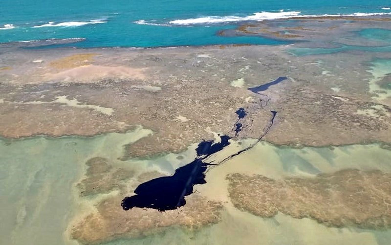
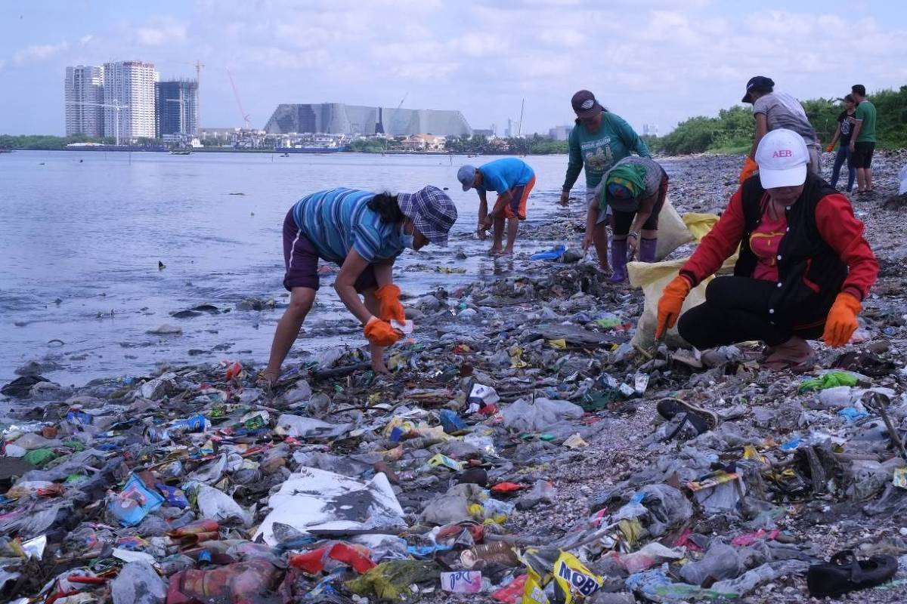
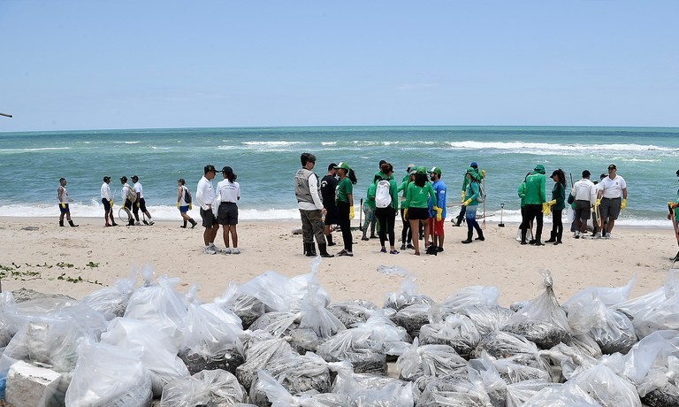
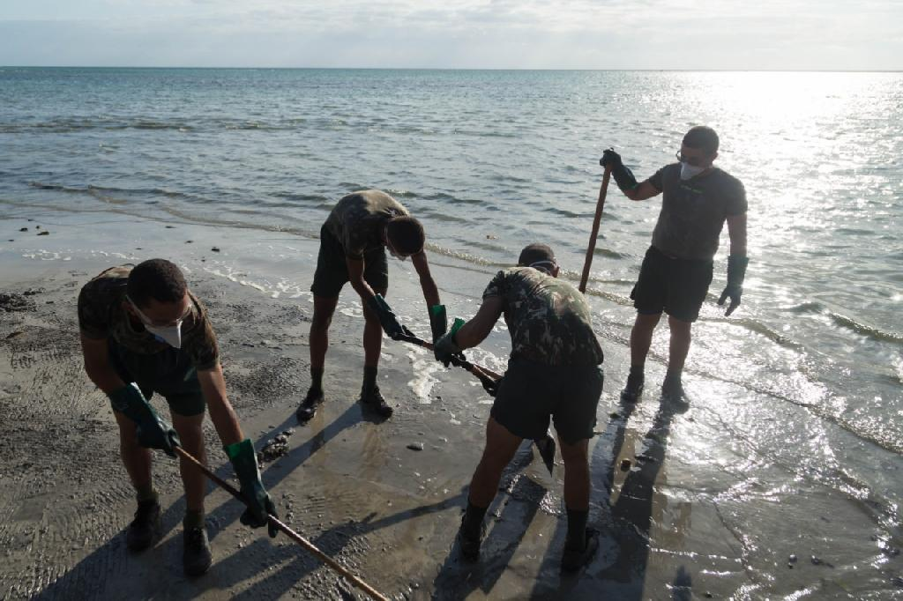
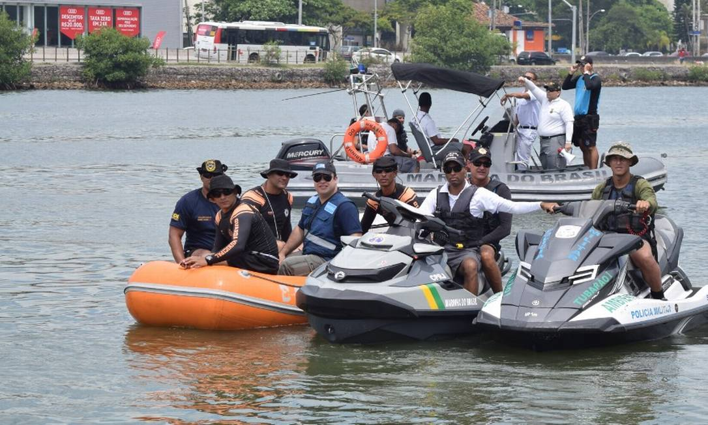
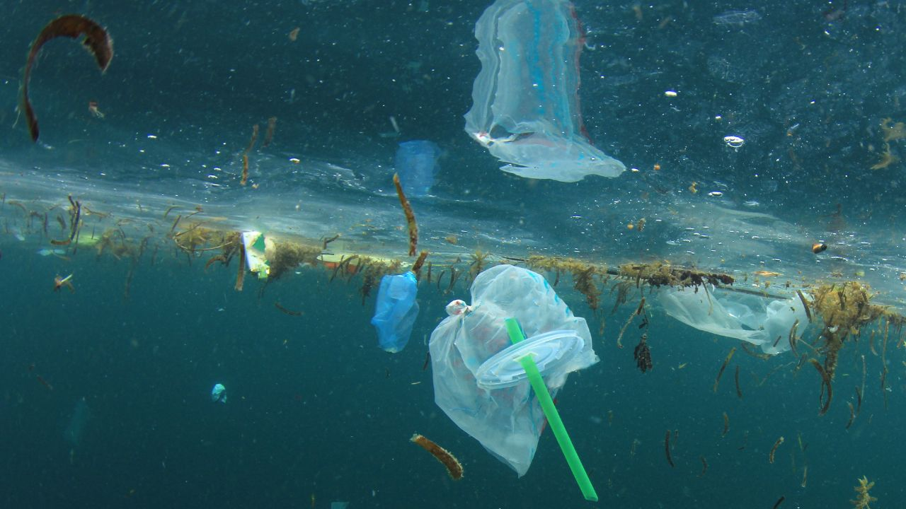

O Problema
A poluição marítima é um problema crescente que afeta a vida marinha, a qualidade das praias, e a saúde das comunidades costeiras. Incidentes como o vazamento de óleo de um navio venezuelano na costa do Nordeste brasileiro em 2020 destacam a necessidade de respostas rápidas e eficazes.
Tecnologia Utilizada
Nosso aplicativo utiliza tecnologias de geolocalização para identificar a localização exata dos incidentes de poluição. As notificações em tempo real permitem que as autoridades sejam informadas imediatamente, facilitando uma resposta rápida e eficiente.
Objetivos
O objetivo principal é facilitar a denúncia de poluição marítima pela população, melhorando a capacidade do Estado de responder a esses incidentes. Além disso, o aplicativo visa aumentar o controle sobre as áreas afetadas, permitindo pesquisas e incentivos para reduzir a poluição marítima.
Público Alvo
Nosso público-alvo inclui todos os cidadãos preocupados com a conservação do meio ambiente, autoridades governamentais responsáveis pela gestão ambiental e organizações não-governamentais dedicadas à proteção dos oceanos.
Benefícios
Os principais benefícios incluem monitoramento eficaz de incidentes de poluição, respostas rápidas e coordenadas, e maior controle sobre as áreas afetadas. Isso contribui para um ambiente mais limpo e seguro, promovendo a saúde pública e a biodiversidade marinha.
Como Ajuda no Dia a Dia
Nosso aplicativo facilita a denúncia de incidentes de poluição marítima, permitindo uma resposta rápida e eficaz. Isso ajuda a manter as praias limpas e seguras para a população, além de proteger a vida marinha e os ecossistemas costeiros.
